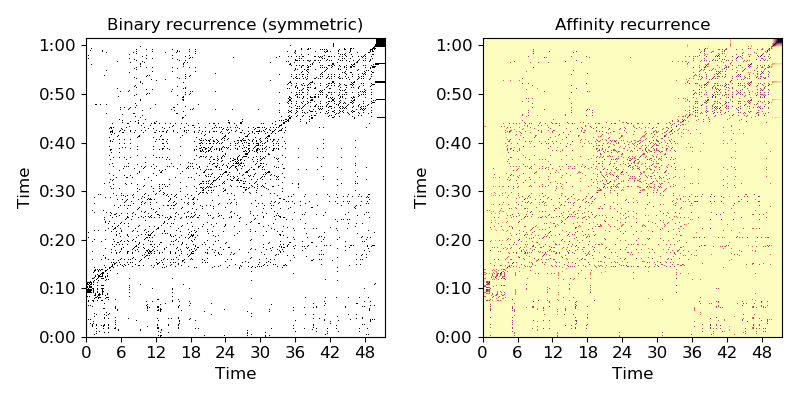

librosa.segment.cross_similarity¶
-
librosa.segment.cross_similarity(data, data_ref, k=None, metric='euclidean', sparse=False, mode='connectivity', bandwidth=None)[source]¶ Compute cross-similarity from one data sequence to a reference sequence.
The output is a matrix xsim:
xsim[i, j] is non-zero if data_ref[:, i] is a k-nearest neighbor of data[:, j].Parameters: - data : np.ndarray [shape=(d, n)]
A feature matrix for the comparison sequence
- data_ref : np.ndarray [shape=(d, n_ref)]
A feature matrix for the reference sequence
- k : int > 0 [scalar] or None
the number of nearest-neighbors for each sample
Default: k = 2 * ceil(sqrt(n_ref)), or k = 2 if n_ref <= 3
- metric : str
Distance metric to use for nearest-neighbor calculation.
See
sklearn.neighbors.NearestNeighborsfor details.- sparse : bool [scalar]
if False, returns a dense type (ndarray) if True, returns a sparse type (scipy.sparse.csc_matrix)
- mode : str, {‘connectivity’, ‘distance’, ‘affinity’}
If ‘connectivity’, a binary connectivity matrix is produced.
If ‘distance’, then a non-zero entry contains the distance between points.
If ‘affinity’, then non-zero entries are mapped to exp( - distance(i, j) / bandwidth) where bandwidth is as specified below.
- bandwidth : None or float > 0
If using
mode='affinity', this can be used to set the bandwidth on the affinity kernel.If no value is provided, it is set automatically to the median distance to the k’th nearest neighbor of each data[:, i].
Returns: - xsim : np.ndarray or scipy.sparse.csc_matrix, [shape=(n_ref, n)]
Cross-similarity matrix
See also
recurrence_matrixrecurrence_to_lagfeature.stack_memorysklearn.neighbors.NearestNeighborsscipy.spatial.distance.cdist
Notes
This function caches at level 30.
Examples
Find nearest neighbors in MFCC space between two sequences
>>> hop_length = 1024 >>> y_ref, sr = librosa.load(librosa.util.example_audio_file()) >>> y_comp, sr = librosa.load(librosa.util.example_audio_file(), offset=10) >>> mfcc_ref = librosa.feature.mfcc(y=y_ref, sr=sr, hop_length=hop_length) >>> mfcc_comp = librosa.feature.mfcc(y=y_comp, sr=sr, hop_length=hop_length) >>> xsim = librosa.segment.cross_similarity(mfcc_comp, mfcc_ref)
Or fix the number of nearest neighbors to 5
>>> xsim = librosa.segment.cross_similarity(mfcc_comp, mfcc_ref, k=5)
Use cosine similarity instead of Euclidean distance
>>> xsim = librosa.segment.cross_similarity(mfcc_comp, mfcc_ref, metric='cosine')
Use an affinity matrix instead of binary connectivity
>>> xsim_aff = librosa.segment.cross_similarity(mfcc_comp, mfcc_ref, mode='affinity')
Plot the feature and recurrence matrices
>>> import matplotlib.pyplot as plt >>> plt.figure(figsize=(8, 4)) >>> plt.subplot(1, 2, 1) >>> librosa.display.specshow(xsim, x_axis='time', y_axis='time', hop_length=hop_length) >>> plt.title('Binary recurrence (symmetric)') >>> plt.subplot(1, 2, 2) >>> librosa.display.specshow(xsim_aff, x_axis='time', y_axis='time', ... cmap='magma_r', hop_length=hop_length) >>> plt.title('Affinity recurrence') >>> plt.tight_layout()
